Sixteen years, one incredible person
Happy Birthday,
Suryanshu!
Buckle up. This one's got a few surprises in the trunk.
Special delivery
Some deliveries you just have to make yourself.
Make a wish
Getting ready to listen for your breath...
Got it
Your candle moment
A few frames from the road so far
Memories, Hung Out to Dry
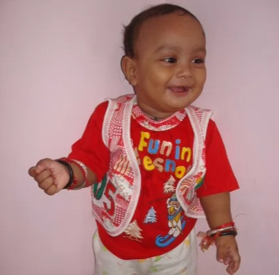
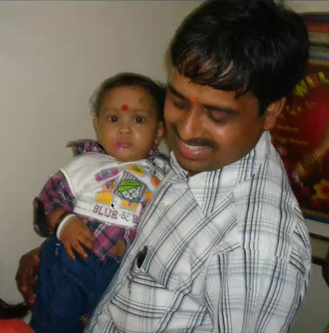
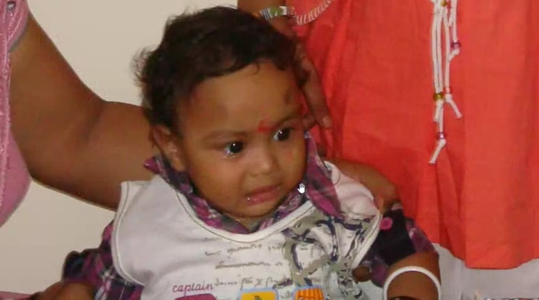
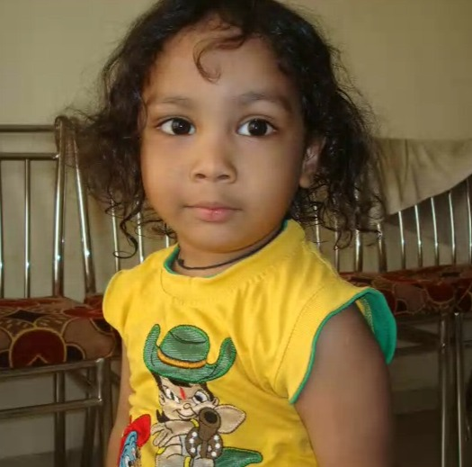
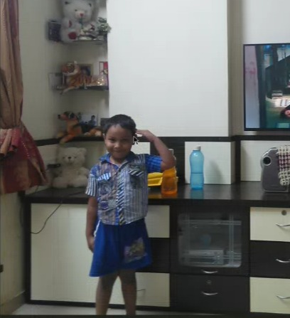
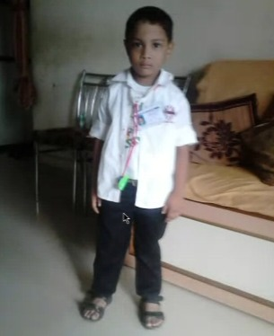
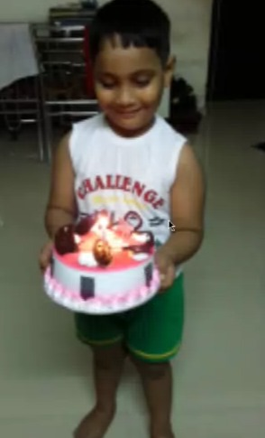
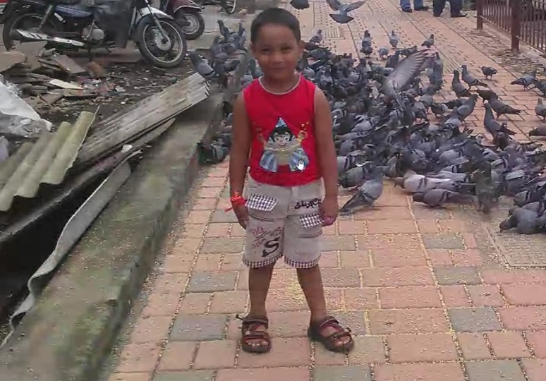
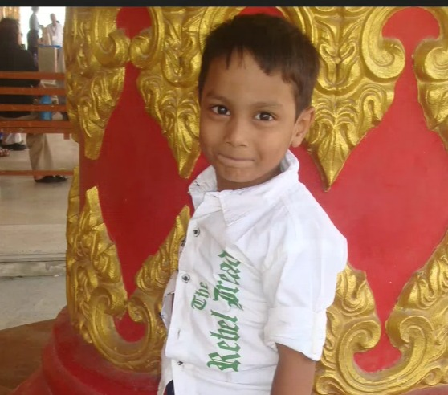
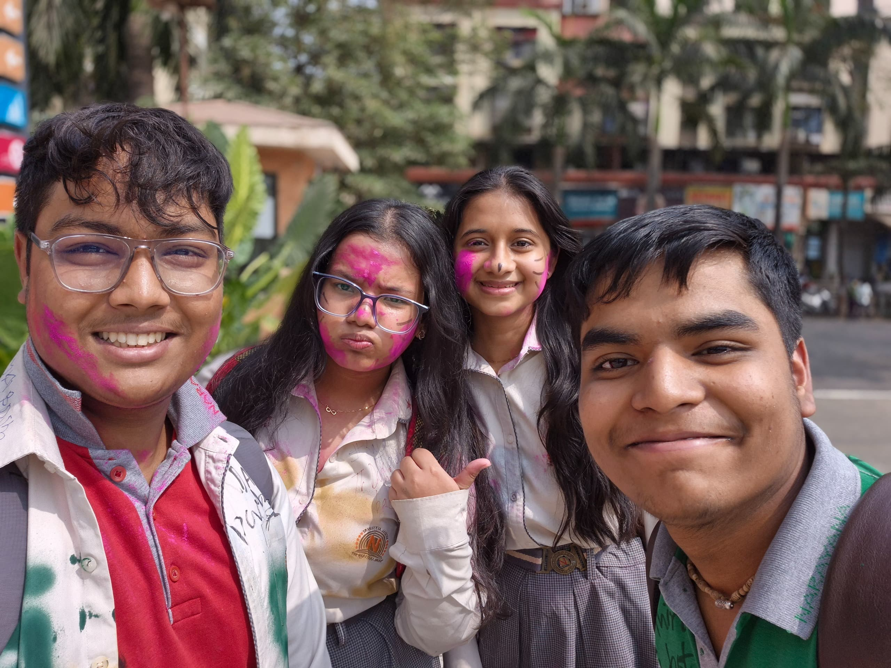
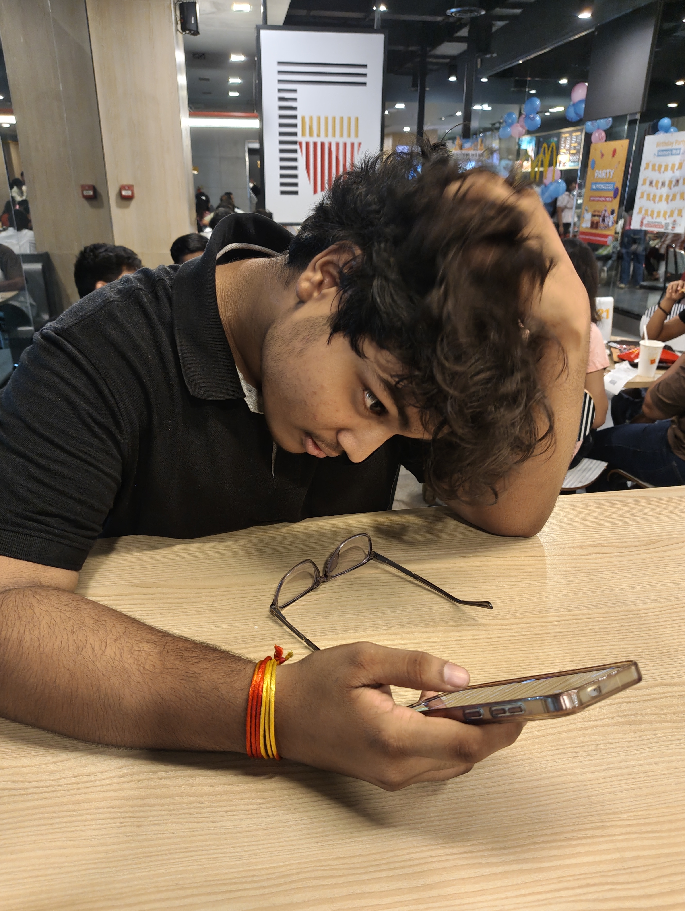
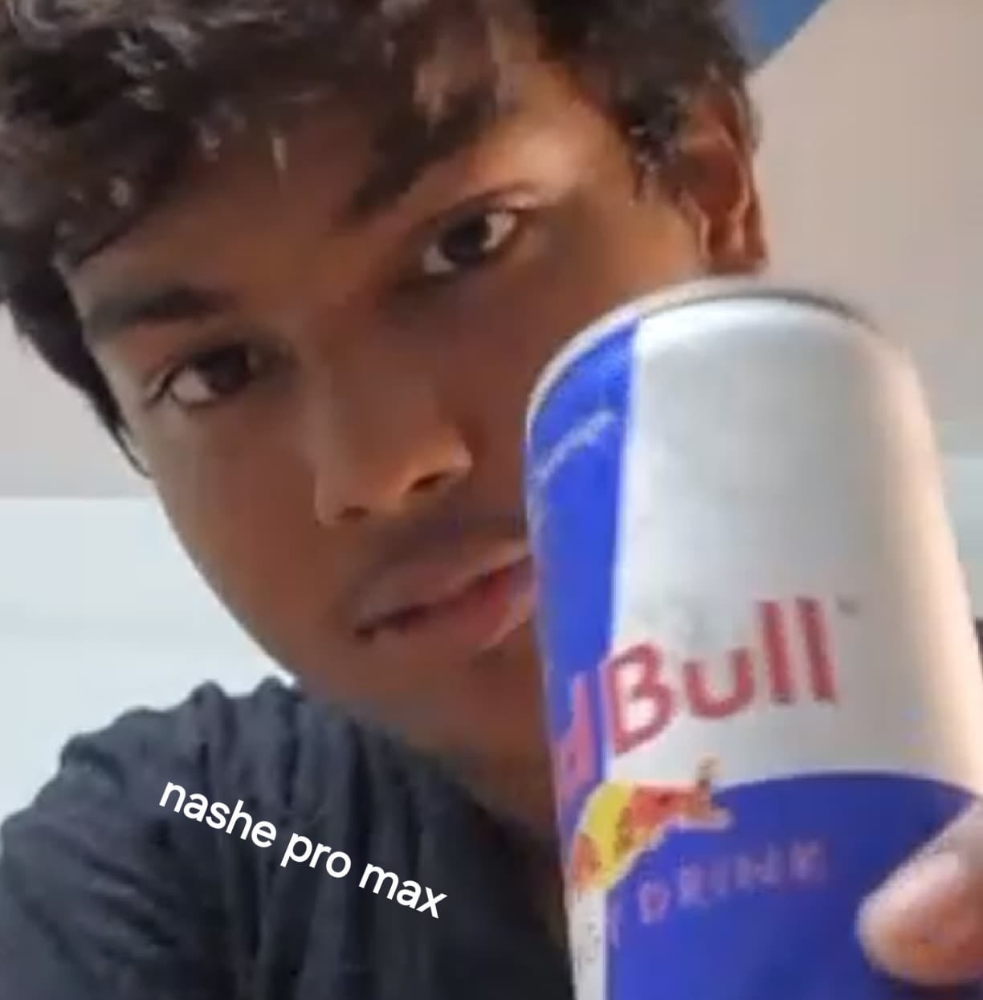
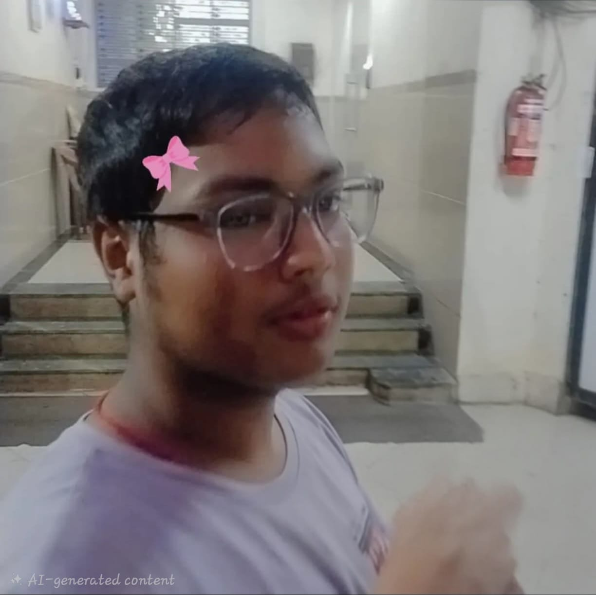
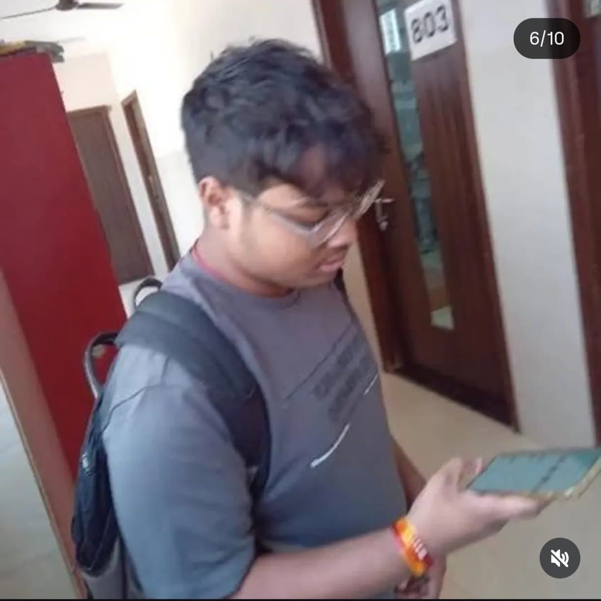
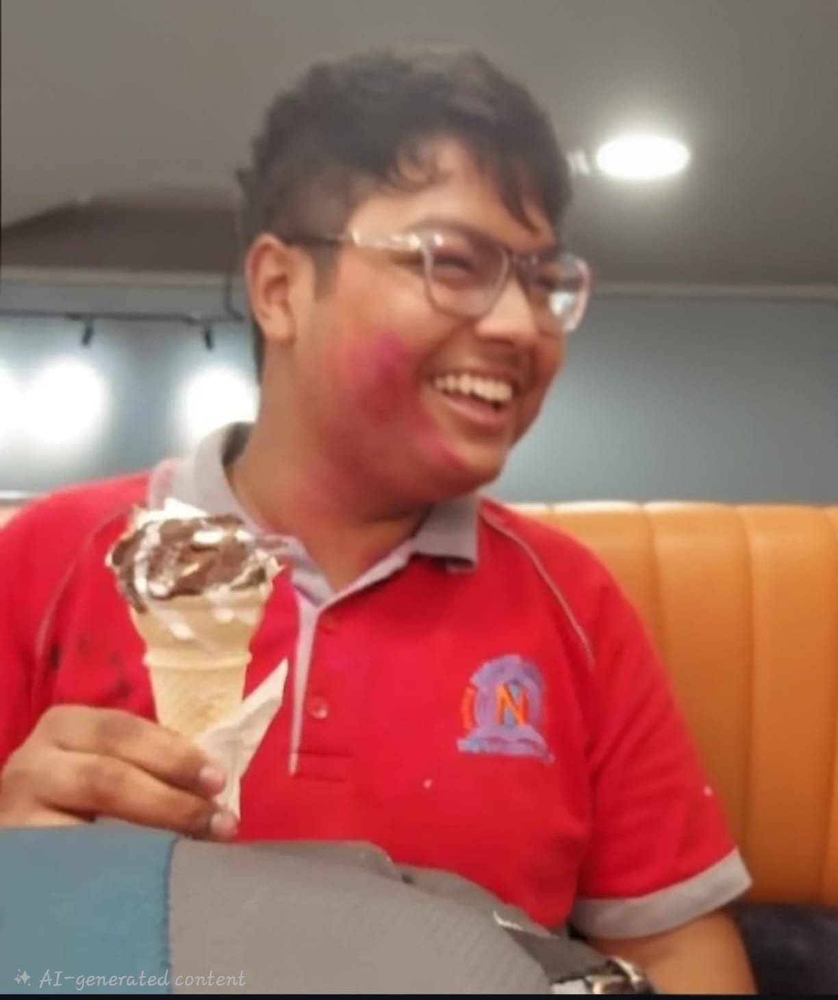
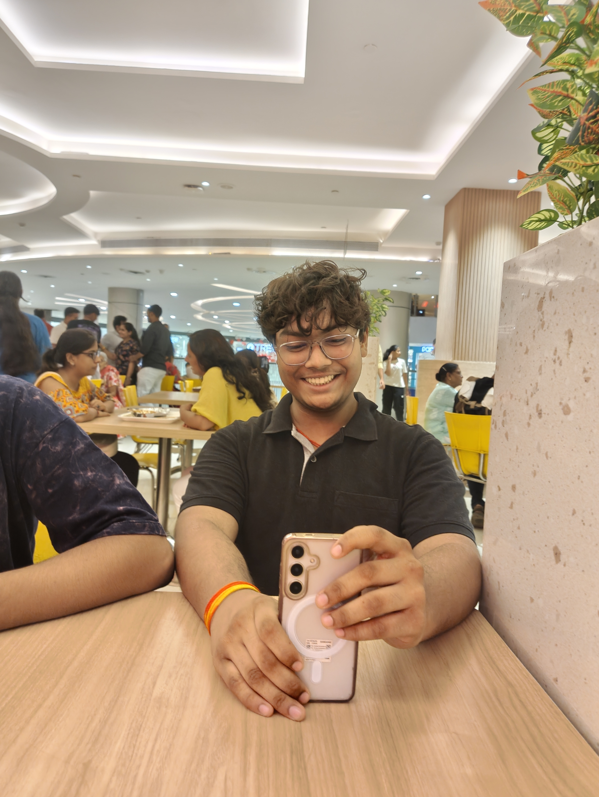
Suryanshu — this whole thing started as a joke about your driving and somehow turned into this. Happy sixteenth. There's a lot more coming, this is just the first draft of a very long friendship.
— your best friend
Before you go
Thank you for sixteen years of being exactly yourself. The road still ahead is all yours.
"You are my person."
"Life is brighter with you."
"To another trip around the sun, together."
Credits
Creator of the site
Drish Shah
An enthusiastic coder and CTE, and Suryanshu's best friend for nearly five years now. This whole thing was built to say, in some small way, what doesn't always get said out loud — happy birthday, and here's to many more.
Photos and video management
Devina Samariya
Surya's girl best friend, who helped pull these memories together for him. Wishing you a very happy birthday, Suryanshu.